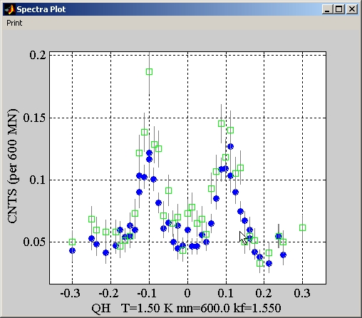

Let us imagine that we want to compare two sets of data from the ILL and overplot them. The desired x and y variables are QH and CNTS, the errors are calculated from the counting statistics, and the monitor is M1. The name of the data filter in this case is 'illbatch'. In each case several scans have to be read in.
To load the first data set we type:
>>s1=loads('illbatch','../026[774 777 781 782 859 860],X=QH,Y=CNTS,M=M1');
and for the second data set:
>>s2=loads('illbatch','../026[772 783 784 861
862],X=QH,Y=CNTS,M=M1');
The two sets can then be overplotted by typing
>>plot(combine(s1),combine(s2))
This produces the result:
